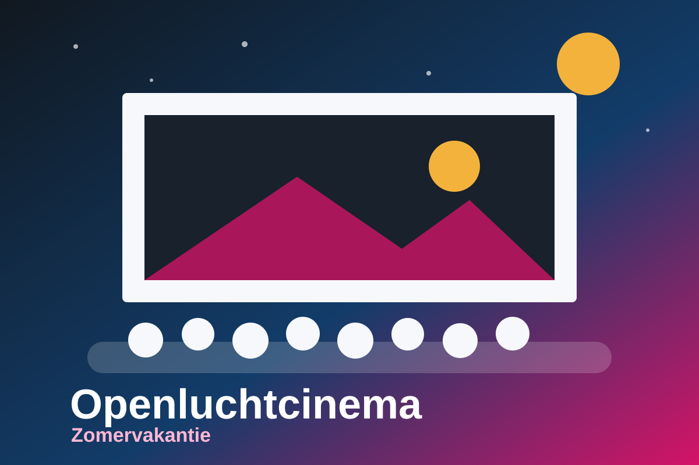
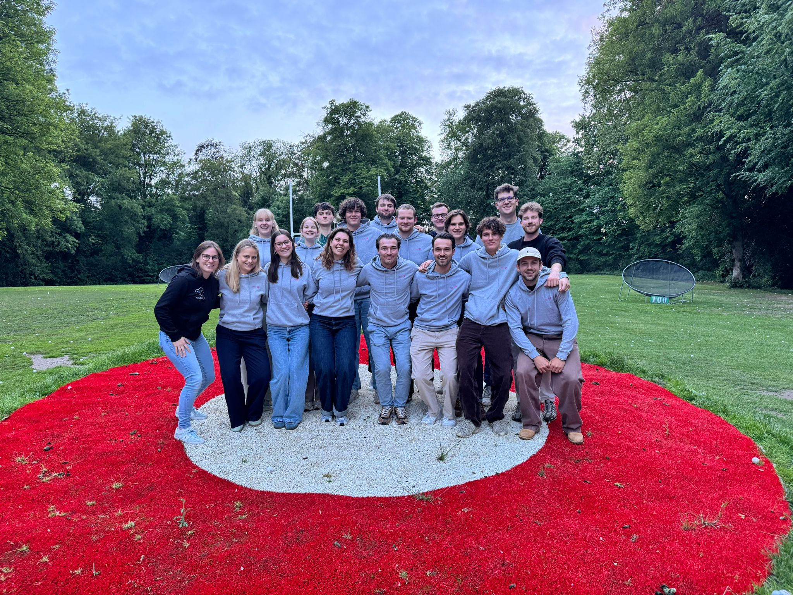
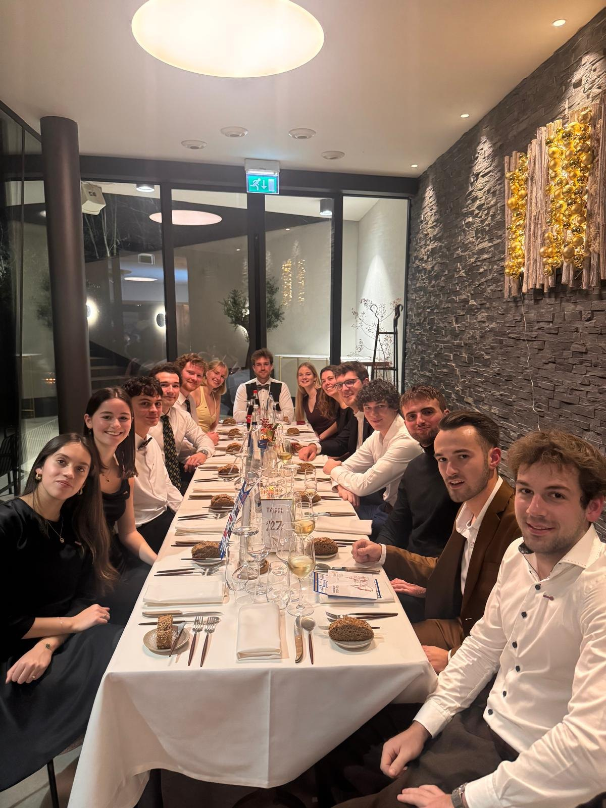
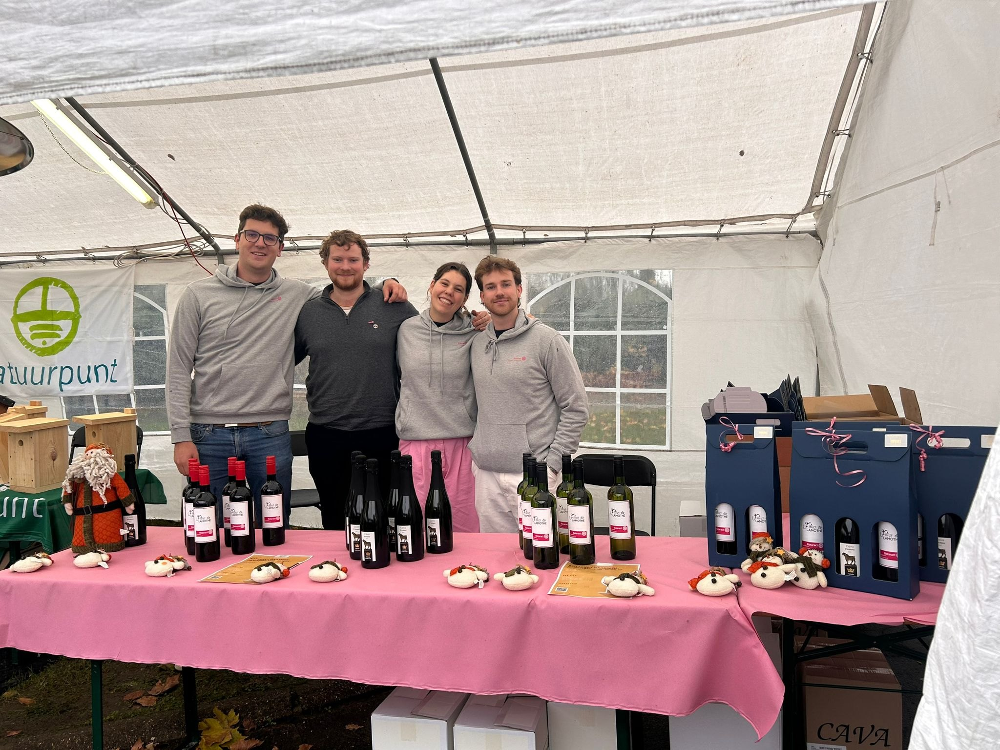
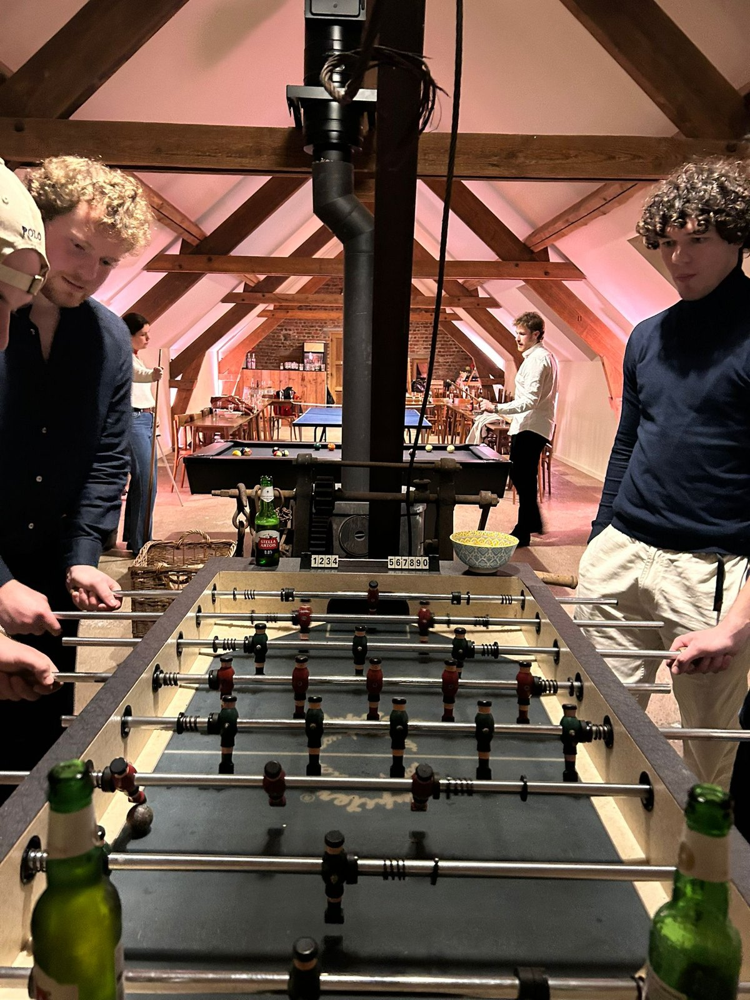
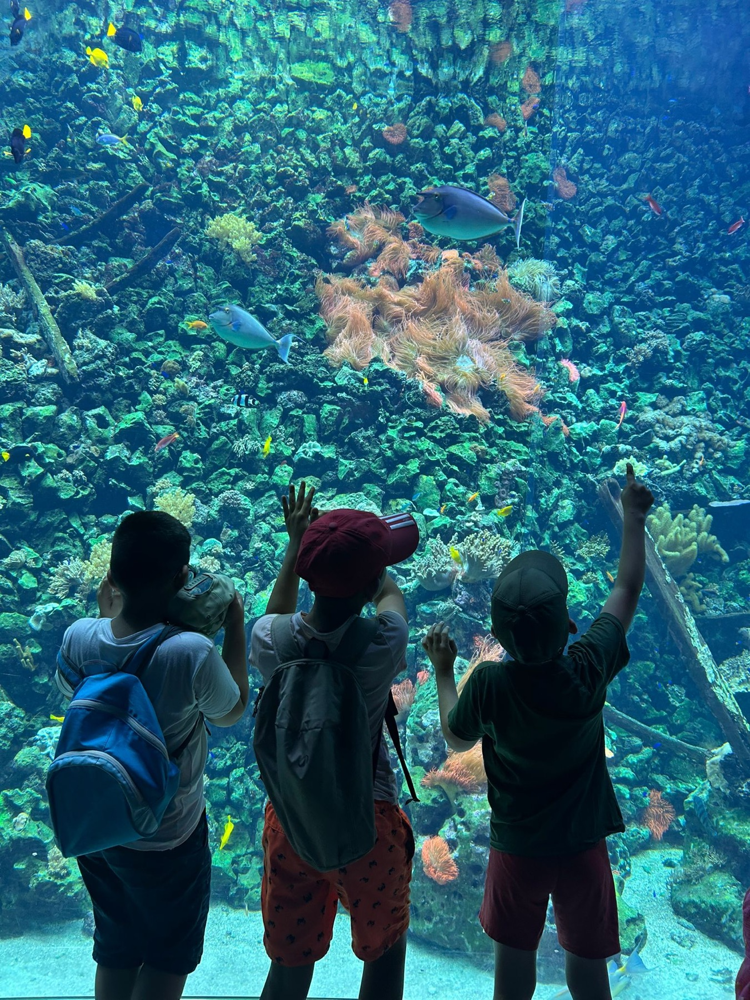
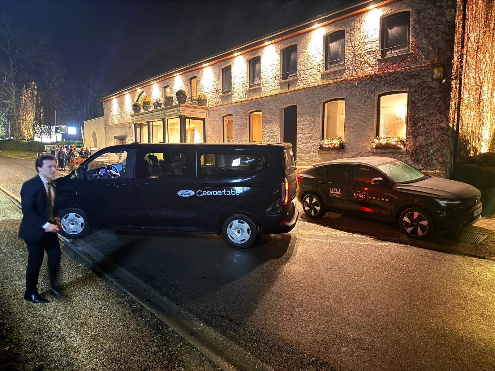
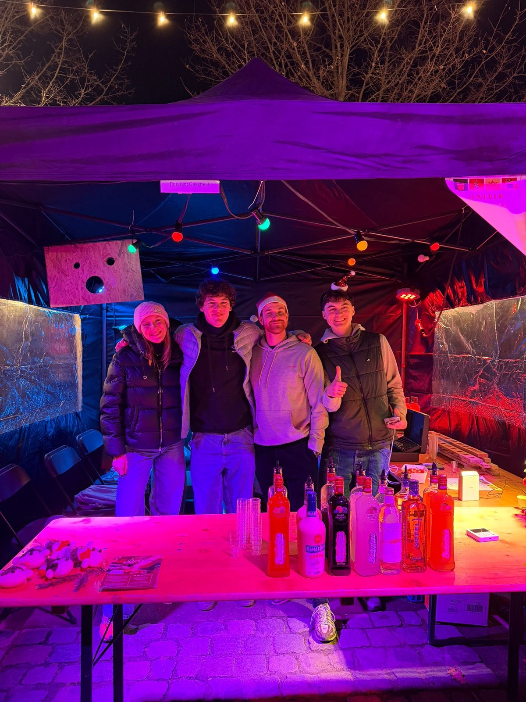

Openluchtcinema
Op 16 augustus 2026 organiseren we vanaf 19u een filmavond in de Dekenijtuin in Lennik.

Service above self in het Pajottenland
Wij zijn de jonge Rotaract-serviceclub voor Gaasbeek en het Pajottenland. We brengen vriendschap, professionele groei en maatschappelijke impact samen.
Wie we zijn
Rotaract Gaasbeek Pajottenland is er voor jonge volwassenen die graag iets opbouwen: projecten voor de buurt, maandelijkse clubavonden, teambuildings en acties waarvan de opbrengst terugvloeit naar zinvolle doelen.



Rotaract in de regio
Rotaract Gaasbeek Pajottenland verenigt jonge volwassenen die hun regio sterker willen maken. Vanuit het Pajottenland organiseren we serviceprojecten, publieke evenementen, clubavonden en teambuildings.
Onze officiële naam is Rotaract Club Gaasbeek Pajottenland VZW. We maken deel uit van de internationale Rotaract-beweging van Rotary International en werken lokaal samen met verenigingen, scholen, goede doelen en partners.
Wat we doen
Van RAC GP tot openluchtcinema, Kidsday, taxi service en Kerstcorrida: elk event is een kans om mensen te verbinden en tegelijk middelen te verzamelen voor projecten die ertoe doen.

Op 16 augustus 2026 organiseren we vanaf 19u een filmavond in de Dekenijtuin in Lennik.

Op 6 september 2026 organiseren we een klassevolle rallydag voor oldtimers en GT-wagens.

Op 25 mei 2026 beleefden we een toffe feestdag met kinderen die opgroeien in kwetsbare omstandigheden.

Voor de jaarlijkse Rotary-bijeenkomst hielpen we bezoekers veilig van en naar hun bestemming.

Een sfeervol moment uit najaar 2025 waar we als club aanwezig waren met een warme stand.
Een actie uit najaar 2025.
Stuur ons een bericht en kom kennismaken op een clubavond of event.